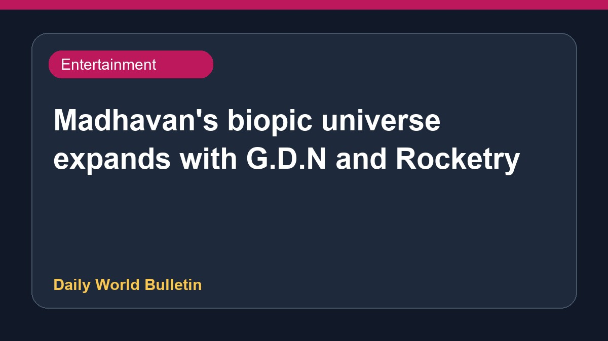

Madhavan's biopic universe expands with G.D.N and Rocketry

Actor R Madhavan's biopic universe is expanding, centering around projects like Rocketry and the upcoming film G.D.N, which explores the life of the inventor often called the Edison of India. Makers recently revealed actor Vinay Rai's look as Bhupendra in the movie. Reports highlight how Madhavan prepared for the role using rare videos and audiobooks. The film is scheduled for release on August 7, shining a light on India's unsung historical heroes and adding to the actor's growing cinematic footprint.
Original source: Entertainment Sources
The MBU is real: Rocketry to G.D.N, Madhavan's biopic universe keeps growing - India Today ↗
The MBU is real: Rocketry to G.D.N, Madhavan's biopic universe keeps growing - India Today ↗